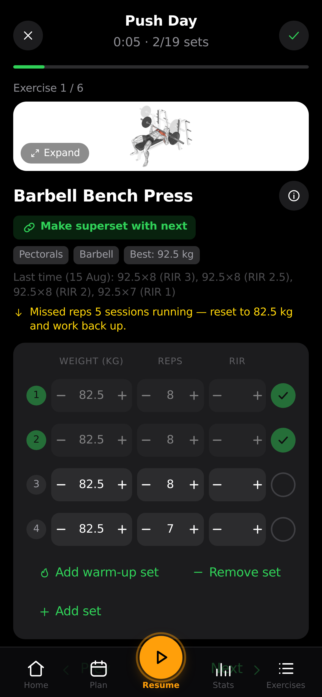

A modern, private workout logger built for serious lifters. Automated progressive overload, 1,300+ exercises, fatigue recovery heatmaps, and drop-set protocols — stored 100% locally on your phone with zero subscriptions and zero tracking.

Exercises & Movement Guides
Offline & Private (Zero Telemetry)
Automated Progression Engines
Forever Free & Open Source
Everything you need to plan routines, log live workouts, and break plateau records without bloated fitness apps.
Automatic weight and rep recall from previous sessions, active rest stopwatch with vibration alerts, wake lock to keep your screen on, and dynamic mid-session exercise swaps.
Program structured drop-sets with auto-calculated weight reductions (-20%), or activation sets with myo-rep cluster bursts (e.g. 12 reps decomposed into [6, 3, 2, 1]).
Front-and-back anatomical heatmap tracking volume balance, real-time muscle fatigue decay curves, and estimated 1RM progression over time.
Science-backed overload policies calculated for you: Linear Progression, Greyskull LP with AMRAP resets and deload ramps, Double Progression rep brackets, and time-based overload for static holds.
Effortlessly migrate years of workout data with 1 click from Strong, Hevy, FitNotes, or Apple Health into Gym Tracker without data loss.
Runs 100% offline with zero cloud required. Optional Google OAuth and Supabase integration when you want instant cross-device database synchronization.
Designed for fast tap targets, zero visual clutter, and effortless logging during heavy workouts.
Log sets with single taps. Previous weights and reps are automatically prefilled so you know exactly what to lift next.
Direct APK download with zero store fees, zero tracking, and complete privacy. Works on any modern Android phone.
Download GymTracker.apk (v1.2.11)Tap the download button above on your Android phone to save GymTracker.apk (~4.6 MB).
Tap the downloaded file. If prompted, tap Settings -> Allow from this source to enable sideloading.
Open Gym Tracker, pick or create your routine, and start logging with science-based progression!
Everything you need to know about Gym Tracker, privacy, and data storage.
Yes, Gym Tracker is 100% free with zero paywalls, zero in-app purchases, and no advertisements. All features (including 1RM tracking, drop-sets, and recovery maps) are fully unlocked forever.
Your data is stored locally in private storage on your own device. It never leaves your phone unless you choose to sync with your own Supabase database or export a JSON backup file.
Yes! Gym Tracker includes a built-in Universal CSV Importer. Simply export your CSV from Strong, Hevy, or FitNotes, open Gym Tracker -> Settings -> Import, and all your past workouts, reps, and dates will be imported instantly.
Yes! While the app runs 100% offline by default, you can connect your own Supabase backend to enable Google OAuth and live multi-device syncing across phone, tablet, and desktop.